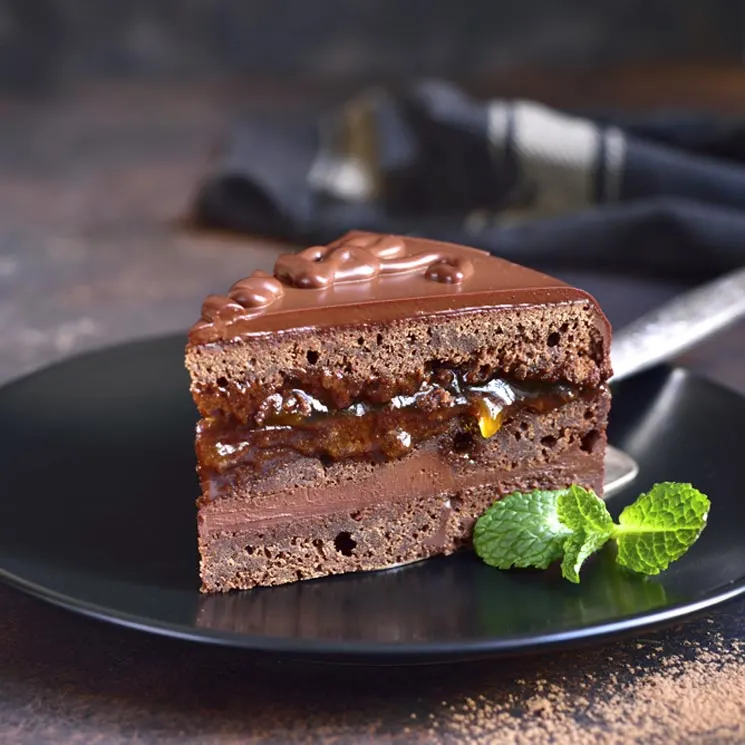
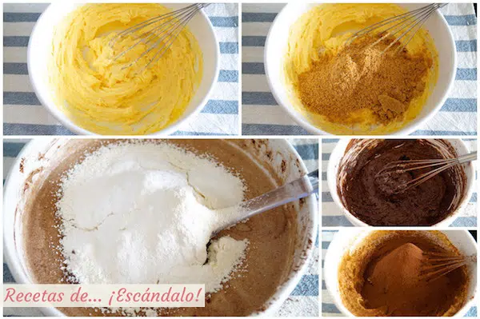

Tarta Sacher, Paso a paso para su Preparacion

Hoy traemos una de las recetas con chocolate con nombre propio, y cuya
receta tiene hasta historia, por lo que tiene que estar sí o sí en
cualquier recetario de repostería. La Tarta Sacher (o Sachertorte en
alemán) es una tarta típica de Austria, y cuyo ingrediente protagonista
es el chocolate. Fue inventada en 1832 por Franz Sacher, y la tradición
familiar hizo que tanto en su confitería como en el Hotel Sacher que
fundó su hijo se sirviera esta exquisita tarta. Esto dio lugar a
disputas a mediados del siglo XX, y es en el hotel donde se sigue
sirviendo la «Original Sacher-Torte», mientras que en la confitería toma
el nombre de «Eduard Sacher-Torte», en honor al hijo de Franz. ¿Y qué
tiene de especial esta tarta? Pues parte de un bizcocho de chocolate muy
muy esponjoso que se divide en dos planchas entre las que se extiende
una capa de mermelada. Después se vuelven a unir las dos planchas y se
recubren con una cobertura de chocolate negro que escurre por los lados
hasta cubrir toda su superficie visible.
Lista de Ingredientes a usar
-
Ingredientes para el Bizcocho y el Relleno
- 100g de mantequilla
- 100g de almendras peladas
- 6 huevos tamano L
- 100g de azucar blanco
- 6g de cacao puro en polvo
- 100g de harina de trigo
- 10g de levadura quimica (tipo Royal)
- 300g de mermelada de albaricoque
-
Ingredientes para la Cobertura de Chocolate
- 100ml de nata para montar
- 130g de chocolate para fundir
- 20g de matequilla sin sal
- 2 cucharadas soperas de agua
Preparacion, como hacer la Tarta Sacher
-
Lo primero que vamos a preparar es el Bizcocho. Para
ello comenzamos dorando las Almendras, puedes hacerlo
poniéndolas en una bandeja de horno y a 150ºC durante unos 15 minutos
vigilándolas que no se quemen, o más rápido en una sartén como hemos
hecho nosotros, apenas 5 minutos a fuego medio y removiéndolas para
evitar que se doren demasiado.
-
Con una Picadora las trituramos y las dejamos como si fuera una harina
gruesa para que se mezcle perfectamente con los demás ingredientes.
Reserva.
- Precalienta el horno a 170°C mientras preparas el bizcocho
- En un bol grande mezcla la Mantequilla (que deberá estar en textura pomada, es decir, sácala al menos 30 minutos antes de la nevera para que sea fácil trabajar con ella) y el Azucar Blanco, y bátelo bien hasta que la mezcla sea densa y blanquecina y el azúcar se haya integrado con la mantequilla.
- Ahora vamos a montar las claras. Los Huevos deberán estar a temperatura ambiente, por lo que sácalos de la nevera al menos media hora antes de comenzar a manipularlos. Separa las Yemas de las Claras dejando las Claras en un bol grande y móntalas con unas varillas manuales o eléctricas. Cuando estén casi montadas añade el Azucar Glas y sigue con el proceso, procurando que no queden muy duras.
- En el bol en el que teníamos la Mantequilla y el Azucar añade las Yemas de una en una batiendo a la vez, y haz lo mismo con las Almendras molidas. Incorpora también el Cacao a través de un colador para que no tenga grumos y sigue batiendo hasta que todos los ingredientes se hayan integrado entre sí.
- Incorpora las Claras poco a poco y mezcla con movimientos envolventes con ayuda de una lengua de cocina para que no se baje su esponjosidad.
- Con la ayuda de un Colador, echa la Harina haciendo que pase por él para que se tamice, es decir, para que caiga a la mezcla sin grumos y se disuelva mejor. Haz lo mismo con la Levadura Quimica. Mézclalas también con movimientos envolventes.

- Forra un Molde Redondo con Papel de Horno (si es de silicona, no necesitas el papel), y echa la mezcla del bizcocho. Estas cantidades son ideales para un molde de 22cm que suele ser lo estándar, ya que si es más grande te quedaría demasiado bajo.
- Introduce el molde en el Horno a altura media y hornea alrededor de 35 Minutos. Para comprobar si está listo, introduce un Palilo en el bizcocho, y si sale limpio es que ya está listo. Si no, déjalo unos pocos minutos más pero vigilando no pasarte para que no pierda jugosidad.
- Sácalo del horno y déjalo enfriar 10 minutos dentro del molde. Después desmóldalo y Dejalo Enfriar completamente para seguir con el siguiente paso.
- Pon Dos Palillos en el bizcocho como puedes ver en la fotografía, así te servirán de guía para cuando tengas que volver a unirlo. Divídelo en dos partes y darle la vuelta al bizcocho, así quedará visible la parte de abajo que será más recta y lisa.
- Ahora que tienes dos capas, pinta la de abajo con la Mermelada de Albaricoque y vuelve a colocar la capa de arriba encima haciendo coincidir los palillos, y aplastando cuidadosamente para que las dos partes queden unidas. Hay quien recorta los bordes para que queden perfectamente definidos, pero esto es recetas de… ¡escándalo! y aquí priorizamos el sabor y el ahorro de tiempo, y nos parece un desperdicio el cortar los bordes solo para dejarla más bonita.
- Ahora vamos con la cobertura de chocolate, que es una parte con cierta complejidad pero también divertida, y además para los más chocolateros es un auténtico placer «repelar» ese chocolate sobrante que escurre la tarta.
- Pon en un cazo la Nata, y cuando hierva aparta del fuego y añádele el Chocolate ligeramente troceado y la Mantequilla. Con una lengua de cocina remueve bien hasta que el chocolate se disuelva por completo (todo esto hazlo rápidamente para que la mezcla siga caliente). Incorpora las 2 cucharadas de Agua, es el truco definitivo para que la cobertura fluya por la tarta y quede bastante liso.
- Ten preparado El Bizcocho Encima de una Rejilla y ésta sobre una bandeja porque el chocolate va a hacer su aparición.
- Vierte por encima la Cobertura de Chocolate directamente del cazo y procura bañar todo el bizcocho de forma que no tengas que alisarlo ni ayudarte con una cuchara ni nada, simplemente se irá adaptando a la tarta. Procura que los bordes queden también cubiertos de chocolate, y para esto quizás si te puedas ayudar un poco de una cuchara.
- Dejalo Enfriar al menos 30 Minutos (aunque esto depende de la estación del año), hasta que veas que se ha solidificado la cobertura.
Tiempo: 1 hora y media
Dificultad: media
Sirve y degusta:
Cuando la cobertura esté sólida sobre la tarta, estará lista. Eso sí, te lo advertimos, Al Dia Siguiente Esta Muchisimo Mas Rica. Esto es debido sobre todo al efecto de la mermelada entre el bizcocho, pues se nota la diferencia bastante.